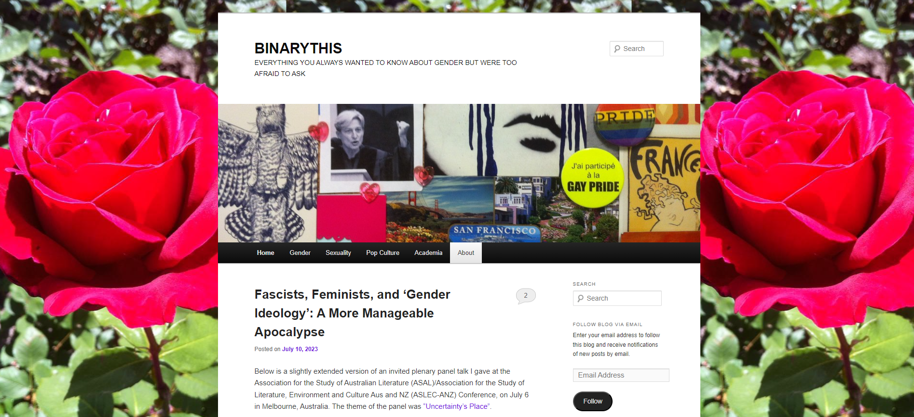

Interactive Narrative Research
My inspiration for this topic is from Natalie’s Reed blog, Sincerely Natalie Reed, as well as the Gender Dysphoria Bible. Both of these blogs delve into the trans experience, both either for self-documentation or for other people’s understanding. Particularly Natalie Reeds blog post titled The Null Hypothesis, which talks about her experience with how cisgendered people are seen as the status quo, and how nothing about us is truly going to fit our own narratives. With the narrative research project, my goal is to foster a habit of being introspective about my own experiences or just other “human matters,” much to like how Natalie Reed describes her topic.
In my additional research, I came across BINARYTHIS, a blog by Hannah McCann which similarly delves into topics of gender, sexuality, and queer theory. The styling of this blog, while still not extremely complex, is much different to the previously mentioned websites: particularly a more thoughtful layout and more photos.
When thinking of styling, the online shop by cursedluver has many attributes that I find desirable, particularly the aesthetic. Although the subjects are not at all the same, I feel that the style can be replicable in a different setting. On the general topic of online shops, the Ursa and Lutra shop has a similar aesthetic to a blog and feels realistic to recreate. What stands out to me of this website is the color palette, which I find pleasing to the eyes.